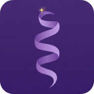

Tu fase y progreso viven en Supabase. Entre aparatos siempre gana el más adelantado.
Claude escribe píldoras de tu categoría más floja. Cuando quedan pocas, se generan solas.
Borra fase, progreso e historial. No se puede deshacer.
Dile cuánto dura tu viaje. Los repasos van intercalados. Cuando se acabe el tiempo puedes cerrar o seguir libre.

Entra con tu cuenta de Lidia: abre lancherosl.github.io/lidia aquí en Safari, inicia sesión y vuelve a esta página.